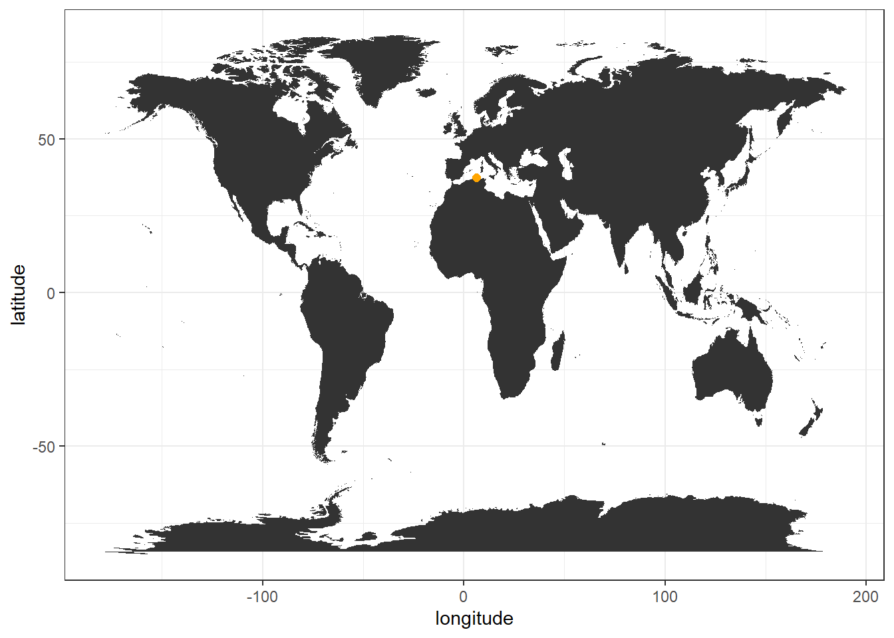
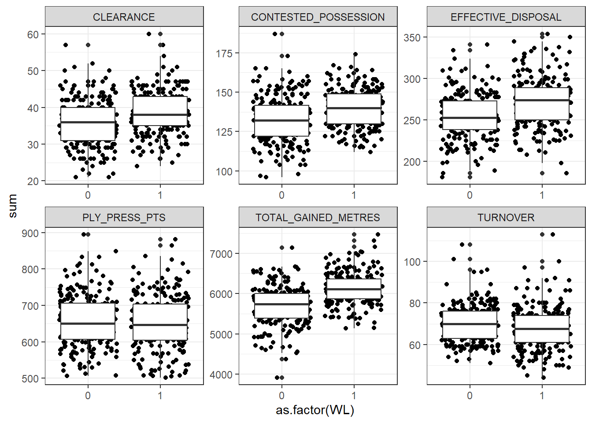
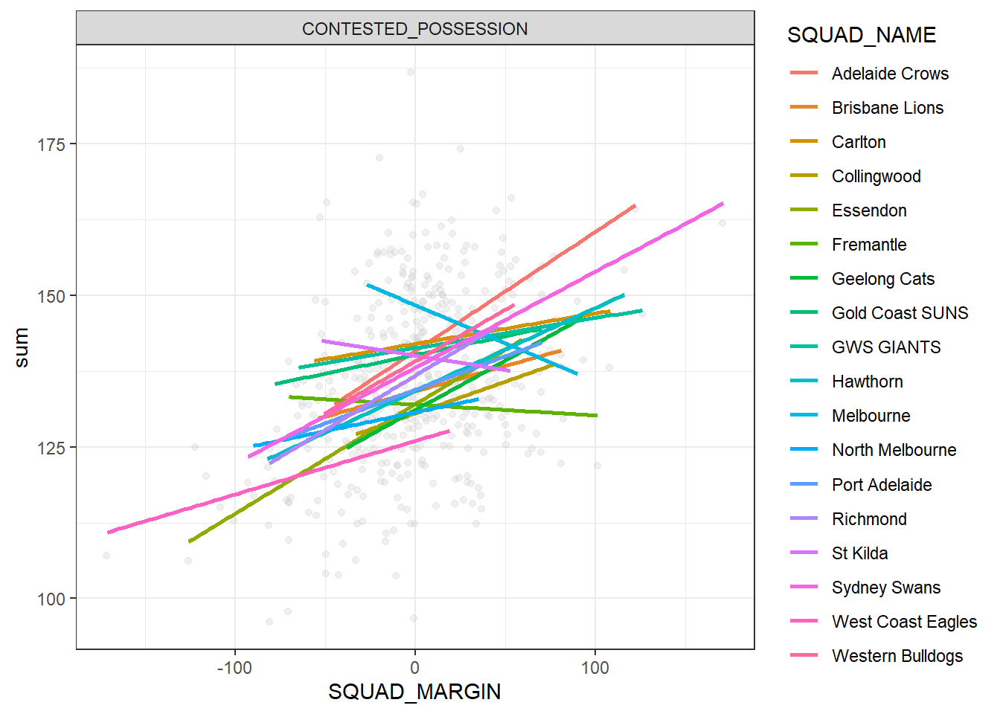

# "#" Will comment out R code and will just print text
# as I already have pacman loaded I will comment it out.
# the short cut to remove comments from code is ctrl+shift+c
#install.packages("pacman")
pacman::p_load(tidyverse,data.table,httr,jsonlite,htmlTable,sf,tidytext)2 Module 1
2.1 Installing and loading R packages
If you have never installed an R package there is a couple of options which I have outlined below :
2.2 Loading data locally
There a couple of different ways to load data. As I want to attempt to future proof your learning we will use the fread() function from the data.table package. Many options for reading in csv;s exist but this by far is one of the fastest ways to load data in R.
Option 1: if the data is located in your directory it is a sample as.
# option 1: if the data is located in your directory it is a sample as.
data1 <- fread("PlayerLong.csv")
playpos <- fread("PlayPos3.csv")Option 2: Data is located elsewhere on your computer you will need to put the full path of where it is located. A simple way to get started with your path is with the getwd() function
getwd()[1] "C:/Users/Research/Desktop/GWS_DSPR"#data1 <- fread("/Users/Research/Dropbox/Rscripts/PlayerLong.csv")Option 3: Finally if you are feeling lazy or struggling to put the correct path in you file.choose();
#data1 <- fread(file.choose())2.2.1 Loading data from API
With the way technologies are heading, connecting to API’s to extract data are only going to become more common. Hence, I will give a quick example of how you may do that in R. Unfortunately, due differing data privacy and safety protocols, some API’s will require different methods of securing a “handshake”. Below is a simple example that does not require authentication.
## get current location of ISS
url <- "https://api.wheretheiss.at/v1/satellites/25544"
world_coordinates <- map_data("world")
df <- fromJSON(url,simplifyDataFrame = T)|>data.frame()
#dff <- rbind(dff,df)
print(ggplot(df,aes(longitude,latitude))+
geom_map(
data = world_coordinates, map = world_coordinates,
aes(long,lat, map_id = region)
)+
geom_point(col="orange",size=2)+
theme_bw())Warning in geom_map(data = world_coordinates, map = world_coordinates,
aes(long, : Ignoring unknown aesthetics: x and y
2.2.2 Binding multiple CSVs from a folder
Sometimes you will have a list of multiple CSV’s that are the same in structure that just represent different dates of saving. In R it is relatively simple to loop through a directory and append all the files. There are multiple ways of doing this but here is one of the most concise ways I have come across.
## directory
loc <- "/Users/Research/Dropbox/Rscripts/listExample"
# gets a list of files in directoru
files <- list.files(path = loc, pattern = "\\.csv$",full.names = T)
## loops through and binds them together.
combined_df <- rbindlist(lapply(files, fread))
unique(combined_df$FIXED_ID)[1] 106730101 106730102 106730103head(combined_df[,.(MATCH_DATE,GROUP_ROUND_NO,HOME_SQUAD,AWAY_SQUAD,
PERIOD,STATISTIC_CODE,FULLNAME)])|>
htmlTable::htmlTable()| MATCH_DATE | GROUP_ROUND_NO | HOME_SQUAD | AWAY_SQUAD | PERIOD | STATISTIC_CODE | FULLNAME | |
|---|---|---|---|---|---|---|---|
| 1 | 28-FEB-19 | 1 | Carlton | Essendon | 1 | MTCHI | |
| 2 | 28-FEB-19 | 1 | Carlton | Essendon | 1 | PERST | |
| 3 | 28-FEB-19 | 1 | Carlton | Essendon | 1 | CEBO | |
| 4 | 28-FEB-19 | 1 | Carlton | Essendon | 1 | CEBO | |
| 5 | 28-FEB-19 | 1 | Carlton | Essendon | 1 | CBVS | Andrew Phillips |
| 6 | 28-FEB-19 | 1 | Carlton | Essendon | 1 | CBVS | Zac Clarke |
2.3 Simple data cleaning procedures
In this example we will be using data1 and playpos data.frames. We will explore how to filter, add variables (mutate) , join data bases and summaries. Below I will tidyverse packages to do this but you could also do everything below using the data.table package (my personal favorite) .
# Lets have a look at column names from both
colnames(data1) [1] "V1" "MATCH_ID" "GAME_ID" "SEASON_ID"
[5] "GROUP_ROUND_NO" "VENUE_NAME" "PERSON_ID" "FULLNAME"
[9] "SQUAD_NAME" "OPP_SQUAD_NAME" "SQUAD_MARGIN" "variable"
[13] "value" colnames(playpos)[1] "FULLNAME" "SEASON_ID" "PERSON_ID" "Position" Quick way to get additional information about your data.
str(data1)Classes 'data.table' and 'data.frame': 2656638 obs. of 13 variables:
$ V1 : int 1 2 3 4 5 6 7 8 9 10 ...
$ MATCH_ID : int 266569840 266569840 266569840 266569840 266569840 266569840 266569840 266569840 266569840 266569840 ...
$ GAME_ID : chr "R0123" "R0123" "R0123" "R0123" ...
$ SEASON_ID : int 2023 2023 2023 2023 2023 2023 2023 2023 2023 2023 ...
$ GROUP_ROUND_NO: int 1 1 1 1 1 1 1 1 1 1 ...
$ VENUE_NAME : chr "MCG" "MCG" "MCG" "MCG" ...
$ PERSON_ID : int 250395 270146 270896 280819 290627 290847 293813 294036 294592 294674 ...
$ FULLNAME : chr "Jack Riewoldt" "Ed Curnow" "Trent Cotchin" "Dylan Grimes" ...
$ SQUAD_NAME : chr "Richmond" "Carlton" "Richmond" "Richmond" ...
$ OPP_SQUAD_NAME: chr "Carlton" "Richmond" "Carlton" "Carlton" ...
$ SQUAD_MARGIN : int 0 0 0 0 0 0 0 0 0 0 ...
$ variable : chr "BALL_UP_CLEARANCE" "BALL_UP_CLEARANCE" "BALL_UP_CLEARANCE" "BALL_UP_CLEARANCE" ...
$ value : num 1 1 3 0 2 0 0 2 1 0 ...
- attr(*, ".internal.selfref")=<externalptr> The above can be a useful problem solver if you are struggling with code, as sometimes things that you might expect to be saved as a integer may be saved as a character. If you then tried to average a column that is considered to be characters you would run into trouble.
2.3.1 Joins
We can notice that both data.frames have columns names called PERSON_ID, what we would like to do is join these databases by SEASON_ID & PERSON_ID so that we could have player position joined with the data1 database. To do this we are going to use a left_join() function from dplyr package, this package is loaded when you load Tidyverse .
A quick note on joins. There are many different types of joins, Left, Right, Inner, Outer and Cross joins. I struggle to remember what they all represent namely because I have only ever really had to use Left joins and the occasional cross join. Below is an example of both a Left and Cross join. See https://r4ds.had.co.nz/relational-data.html#understanding-joins for more information regarding other join methods.
## Cross join: I am going to use the data.table CJ function here just because it is already loaded and it is faster than tidyverse equivalent
list1 <-seq(as.Date("2023-11-20"), as.Date("2024-09-28"), by="days")
list2 <- c("A","B","C","D")
head(CJ(list1,list2),12)|>htmlTable::htmlTable()| list1 | list2 | |
|---|---|---|
| 1 | 2023-11-20 | A |
| 2 | 2023-11-20 | B |
| 3 | 2023-11-20 | C |
| 4 | 2023-11-20 | D |
| 5 | 2023-11-21 | A |
| 6 | 2023-11-21 | B |
| 7 | 2023-11-21 | C |
| 8 | 2023-11-21 | D |
| 9 | 2023-11-22 | A |
| 10 | 2023-11-22 | B |
| 11 | 2023-11-22 | C |
| 12 | 2023-11-22 | D |
## now for a left join example
## simple rule for left join, large merges with small, in our case data1 with playpos
data2 = left_join(data1,playpos, by =c("SEASON_ID","PERSON_ID","FULLNAME"))
#names(data2)
head(data2)|>htmlTable::htmlTable()| V1 | MATCH_ID | GAME_ID | SEASON_ID | GROUP_ROUND_NO | VENUE_NAME | PERSON_ID | FULLNAME | SQUAD_NAME | OPP_SQUAD_NAME | SQUAD_MARGIN | variable | value | Position | |
|---|---|---|---|---|---|---|---|---|---|---|---|---|---|---|
| 1 | 1 | 266569840 | R0123 | 2023 | 1 | MCG | 250395 | Jack Riewoldt | Richmond | Carlton | 0 | BALL_UP_CLEARANCE | 1 | Key Fwd |
| 2 | 2 | 266569840 | R0123 | 2023 | 1 | MCG | 270146 | Ed Curnow | Carlton | Richmond | 0 | BALL_UP_CLEARANCE | 1 | Mid Fwd |
| 3 | 3 | 266569840 | R0123 | 2023 | 1 | MCG | 270896 | Trent Cotchin | Richmond | Carlton | 0 | BALL_UP_CLEARANCE | 3 | Mid Fwd |
| 4 | 4 | 266569840 | R0123 | 2023 | 1 | MCG | 280819 | Dylan Grimes | Richmond | Carlton | 0 | BALL_UP_CLEARANCE | 0 | Key Def |
| 5 | 5 | 266569840 | R0123 | 2023 | 1 | MCG | 290627 | Dion Prestia | Richmond | Carlton | 0 | BALL_UP_CLEARANCE | 2 | Mid |
| 6 | 6 | 266569840 | R0123 | 2023 | 1 | MCG | 290847 | Dustin Martin | Richmond | Carlton | 0 | BALL_UP_CLEARANCE | 0 | Gen Fwd |
2.3.2 Selecting and filtering
Okay , lets say after inspection of the data.frame we feel like some columns are redundant or we simply just want to move some columns around we will achieve this using the select verb. Additionally, lets say we want to just have the data frame represent certain positions and key variables (game statistics) we think are important, this can be achieved using the filter verb.
# Firstly lets get a list of column names
names(data2) [1] "V1" "MATCH_ID" "GAME_ID" "SEASON_ID"
[5] "GROUP_ROUND_NO" "VENUE_NAME" "PERSON_ID" "FULLNAME"
[9] "SQUAD_NAME" "OPP_SQUAD_NAME" "SQUAD_MARGIN" "variable"
[13] "value" "Position" # Lets have a look at what positions exist within the Position column
unique(data2$Position)[1] "Key Fwd" "Mid Fwd" "Key Def" "Mid" "Gen Fwd" "Wing" "Gen Def"
[8] "Ruck" NA # finally lets explore what statisitcs are within the variable column
head(unique(data2$variable),30) [1] "BALL_UP_CLEARANCE" "BALL_UP_FIRST_POSSESSION"
[3] "BALL_UP_HITOUT" "BALL_UP_HITOUT_SHARKED"
[5] "BAULKED" "BEHIND"
[7] "BROKEN_TACKLE" "BU_HITOUT_TO_ADVANTAGE"
[9] "CB_FIRST_POSSESSION" "CB_HITOUT_SHARKED"
[11] "CB_HITOUT_TO_ADVANTAGE" "CENTRE_BOUNCE_CLEARANCE"
[13] "CENTRE_BOUNCE_HITOUT" "CLANGER"
[15] "CLANGER_HANDBALL" "CLANGER_KICK"
[17] "CLEARANCE" "CONTESTED_KNOCK_ON"
[19] "CONTESTED_MARK" "CONTESTED_MARK_FROM_OPP"
[21] "CONTESTED_MARK_FROM_TEAM" "CONTESTED_POSSESSION"
[23] "CONTESTED_POSSESSION_POST" "CONTESTED_POSSESSION_PRE"
[25] "CRUMB" "DISPOSAL"
[27] "DISPOSAL_POST" "DISPOSAL_PRE"
[29] "EFFECTIVE_DISPOSAL" "EFFECTIVE_HANDBALL" ## select by number or name
data2 = data2|>
select(4,2,5:9,14,10:13)|>
# If you want to remove a column you can do the below
# select(!c("PERSON_ID"))|> this is an example how you may remove a specific column
# filter(Position %in% c("Mid Fwd","Mid"))|>
filter(variable %in% c("CLEARANCE","CONTESTED_POSSESSION",
"EFFECTIVE_DISPOSAL","TURNOVER",
"TOTAL_GAINED_METRES","PLY_PRESS_PTS"))
# Check variables
unique(data2$variable)[1] "CLEARANCE" "CONTESTED_POSSESSION" "EFFECTIVE_DISPOSAL"
[4] "TOTAL_GAINED_METRES" "TURNOVER" "PLY_PRESS_PTS" 2.3.3 Adding calculated columns
Lets add a calculated column to the data frame using the mutate function. The column we are going to add is going to convert the score differential into a binary win loss where 0 represents a loss and 1 a win.
data2 <- data2|>mutate(WL = ifelse(SQUAD_MARGIN>0,1,0))
# if we wanted to have draw we could simply do
data2 <- data2|>mutate(WLD = ifelse(SQUAD_MARGIN>0,1,
ifelse(SQUAD_MARGIN==0,0,-1)))
# We don't have to break it up as we did above we could simply add two columns at once
data2 <- data2|>mutate(WL = ifelse(SQUAD_MARGIN>0,1,0),
WLD = ifelse(SQUAD_MARGIN>0,1,
ifelse(SQUAD_MARGIN==0,0,-1)))
data2|>
tail(10)|>
htmlTable()| SEASON_ID | MATCH_ID | GROUP_ROUND_NO | VENUE_NAME | PERSON_ID | FULLNAME | SQUAD_NAME | Position | OPP_SQUAD_NAME | SQUAD_MARGIN | variable | value | WL | WLD | |
|---|---|---|---|---|---|---|---|---|---|---|---|---|---|---|
| 1 | 2024 | 149741648 | 7 | MCG | 1013133 | Braeden Campbell | Sydney Swans | Wing | Hawthorn | 76 | PLY_PRESS_PTS | 3.75 | 1 | 1 |
| 2 | 2024 | 149741648 | 7 | MCG | 1013230 | Logan McDonald | Sydney Swans | Key Fwd | Hawthorn | 76 | PLY_PRESS_PTS | 22.8 | 1 | 1 |
| 3 | 2024 | 149741648 | 7 | MCG | 1013409 | James Jordon | Sydney Swans | Mid Fwd | Hawthorn | 76 | PLY_PRESS_PTS | 29.1 | 1 | 1 |
| 4 | 2024 | 149741648 | 7 | MCG | 1017091 | Jai Serong | Hawthorn | Key Def | Sydney Swans | -76 | PLY_PRESS_PTS | 1.2 | 0 | -1 |
| 5 | 2024 | 149741648 | 7 | MCG | 1017094 | Connor Macdonald | Hawthorn | Gen Fwd | Sydney Swans | -76 | PLY_PRESS_PTS | 25.65 | 0 | -1 |
| 6 | 2024 | 149741648 | 7 | MCG | 1018016 | Seamus Mitchell | Hawthorn | Gen Def | Sydney Swans | -76 | PLY_PRESS_PTS | 9.15 | 0 | -1 |
| 7 | 2024 | 149741648 | 7 | MCG | 1020895 | Jai Newcombe | Hawthorn | Mid | Sydney Swans | -76 | PLY_PRESS_PTS | 26.55 | 0 | -1 |
| 8 | 2024 | 149741648 | 7 | MCG | 1023482 | Cam Mackenzie | Hawthorn | Mid | Sydney Swans | -76 | PLY_PRESS_PTS | 43.5 | 0 | -1 |
| 9 | 2024 | 149741648 | 7 | MCG | 1027935 | Josh Weddle | Hawthorn | Key Def | Sydney Swans | -76 | PLY_PRESS_PTS | 20.55 | 0 | -1 |
| 10 | 2024 | 149741648 | 7 | MCG | 1027965 | Max Ramsden | Hawthorn | Key Fwd | Sydney Swans | -76 | PLY_PRESS_PTS | 9.6 | 0 | -1 |
2.3.4 Adding calculated columns by group
data2 <- data2|>
group_by(variable,Position)|>
# if you wanted to specific by position you could do the below
#group_by(SEASON_ID,Position,variable)|>
mutate(avgByVar = round(mean(value),2))|>
ungroup()|>
mutate(diff = round(value - avgByVar,2))
htmlTable(head(data2,10))| SEASON_ID | MATCH_ID | GROUP_ROUND_NO | VENUE_NAME | PERSON_ID | FULLNAME | SQUAD_NAME | Position | OPP_SQUAD_NAME | SQUAD_MARGIN | variable | value | WL | WLD | avgByVar | diff | |
|---|---|---|---|---|---|---|---|---|---|---|---|---|---|---|---|---|
| 1 | 2023 | 266569840 | 1 | MCG | 250395 | Jack Riewoldt | Richmond | Key Fwd | Carlton | 0 | CLEARANCE | 1 | 0 | 0 | 0.47 | 0.53 |
| 2 | 2023 | 266569840 | 1 | MCG | 270146 | Ed Curnow | Carlton | Mid Fwd | Richmond | 0 | CLEARANCE | 1 | 0 | 0 | 2.08 | -1.08 |
| 3 | 2023 | 266569840 | 1 | MCG | 270896 | Trent Cotchin | Richmond | Mid Fwd | Carlton | 0 | CLEARANCE | 4 | 0 | 0 | 2.08 | 1.92 |
| 4 | 2023 | 266569840 | 1 | MCG | 280819 | Dylan Grimes | Richmond | Key Def | Carlton | 0 | CLEARANCE | 0 | 0 | 0 | 0.2 | -0.2 |
| 5 | 2023 | 266569840 | 1 | MCG | 290627 | Dion Prestia | Richmond | Mid | Carlton | 0 | CLEARANCE | 5 | 0 | 0 | 4.56 | 0.44 |
| 6 | 2023 | 266569840 | 1 | MCG | 290847 | Dustin Martin | Richmond | Gen Fwd | Carlton | 0 | CLEARANCE | 1 | 0 | 0 | 0.87 | 0.13 |
| 7 | 2023 | 266569840 | 1 | MCG | 293813 | Tom Lynch | Richmond | Key Fwd | Carlton | 0 | CLEARANCE | 2 | 0 | 0 | 0.47 | 1.53 |
| 8 | 2023 | 266569840 | 1 | MCG | 294036 | George Hewett | Carlton | Mid | Richmond | 0 | CLEARANCE | 8 | 0 | 0 | 4.56 | 3.44 |
| 9 | 2023 | 266569840 | 1 | MCG | 294592 | Kamdyn McIntosh | Richmond | Wing | Carlton | 0 | CLEARANCE | 1 | 0 | 0 | 1.48 | -0.48 |
| 10 | 2023 | 266569840 | 1 | MCG | 294674 | Nick Vlastuin | Richmond | Gen Def | Carlton | 0 | CLEARANCE | 0 | 0 | 0 | 0.75 | -0.75 |
2.3.5 Summarizing data (creating pivot tables)
Okay the next section is going to go over how we can create pivot tables using the summarise function from the dplyr package which is loaded when you load tidyverse . I will do a couple of different examples of data summaries you may be interested in making using the data-set at hand. I will also show examples of plots as this can be a quick way to just double check your aggregation procedures
library(tidytext)
data2|>
filter(SEASON_ID==2023)|>
group_by(SEASON_ID,SQUAD_NAME,GROUP_ROUND_NO,variable)%>%
summarise(sum = sum(value))%>%
ungroup()|>
group_by(SEASON_ID,SQUAD_NAME,variable)%>%
summarise(season_avg = mean(sum),
season_sd = sd(sum),
season_max = max(sum),
season_sum = sum(sum))|>
ungroup()|>
#arrange(variable, desc(season_avg))|>
# Reorder SQUAD_NAME based on season_avg, within each variable facet
mutate(SQUAD_NAME_RO = reorder_within(SQUAD_NAME, season_sum, variable))|>
ggplot(aes(season_sum,SQUAD_NAME_RO,col=as.factor(SEASON_ID)))+
geom_point()+
facet_wrap(~variable, scales = "free", labeller = label_wrap_gen(width = 10)) +
scale_y_reordered() + # Necessary to apply the custom ordering
theme_bw() +
theme(legend.position = "top",
axis.text = element_text(size = 6))`summarise()` has grouped output by 'SEASON_ID', 'SQUAD_NAME',
'GROUP_ROUND_NO'. You can override using the `.groups` argument.
`summarise()` has grouped output by 'SEASON_ID', 'SQUAD_NAME'. You can override
using the `.groups` argument.You don’t need to necessarily know what the code below is doing for now but It is just going to shorten the club names.
In this next example lets have a quick look at the average stats across key variables as a function of score differential and or Win vs Loss.
data2|>
filter(SEASON_ID==2023)|>
group_by(SQUAD_NAME,GROUP_ROUND_NO,variable,WL)|>
summarise(sum = sum(value))|>
ggplot(aes(as.factor(WL),sum))+
geom_jitter()+
geom_boxplot()+
theme_bw()+
facet_wrap(~variable,scales = "free")`summarise()` has grouped output by 'SQUAD_NAME', 'GROUP_ROUND_NO', 'variable'.
You can override using the `.groups` argument.
data2|>
filter(SEASON_ID==2023)|>
group_by(SQUAD_NAME,GROUP_ROUND_NO,variable,SQUAD_MARGIN)|>
summarise(sum = sum(value))|>
ggplot(aes(SQUAD_MARGIN,sum, col = SQUAD_NAME))+
geom_jitter(col="gray80",alpha=.3)+
stat_smooth(method = "lm",se=F)+
theme_bw()+
theme(legend.position="top")+
facet_wrap(~variable,scales = "free")`summarise()` has grouped output by 'SQUAD_NAME', 'GROUP_ROUND_NO', 'variable'.
You can override using the `.groups` argument.
`geom_smooth()` using formula = 'y ~ x'Lets delve a little deeper in to CONTESTED_POSSESSION
data2|>
filter(SEASON_ID==2023)|>
group_by(SQUAD_NAME,GROUP_ROUND_NO,variable,SQUAD_MARGIN)|>
summarise(sum = sum(value))|>
filter(variable=="CONTESTED_POSSESSION")|>
ggplot(aes(SQUAD_MARGIN,sum, col = SQUAD_NAME))+
geom_jitter(col="gray80",alpha=.3)+
stat_smooth(method = "lm",se=F)+
theme_bw()+
facet_wrap(~variable,scales = "free")`summarise()` has grouped output by 'SQUAD_NAME', 'GROUP_ROUND_NO', 'variable'.
You can override using the `.groups` argument.
`geom_smooth()` using formula = 'y ~ x'
2.4 Running your first model
Okay we are going to run our first statistical model. The simple linear model we will use in this case isn’t technically appropriate to use for the data set at hand but we will improve on this over the coming months. Before we can run the model we need to change the shape of the data-frame from its “long” format to a “wider” format. We can do that using the spread function.
Personally, I prefer using dcast.dafwrifwta.table function for this but I am trying to be consistent within the tidyverse for you here.
wide_TV = data2|>
filter(SEASON_ID==2023)|>
# filter(Position%in%c("Mid","Mid Fwd"))|>
group_by(SQUAD_NAME,GROUP_ROUND_NO,variable,SQUAD_MARGIN)|>
summarise(sum = sum(value))|>
spread(key = c("variable"),value = sum)`summarise()` has grouped output by 'SQUAD_NAME', 'GROUP_ROUND_NO', 'variable'.
You can override using the `.groups` argument.## the data.table method i prefer
wide_dt = setDT(data2)[SEASON_ID==2023,#&Position%in%c("Mid","Mid Fwd"),
][, .(sum = sum(value)),
by=.(SQUAD_NAME,GROUP_ROUND_NO,variable,SQUAD_MARGIN)
][,dcast.data.table(.SD,...~variable,value.var = "sum")
]
#wide_TV|>head()|>htmlTable()
wide_dt|>head()|>htmlTable()| SQUAD_NAME | GROUP_ROUND_NO | SQUAD_MARGIN | CLEARANCE | CONTESTED_POSSESSION | EFFECTIVE_DISPOSAL | PLY_PRESS_PTS | TOTAL_GAINED_METRES | TURNOVER | |
|---|---|---|---|---|---|---|---|---|---|
| 1 | Adelaide Crows | 1 | -16 | 33 | 111 | 242 | 613.35 | 6077.2 | 56 |
| 2 | Adelaide Crows | 2 | -32 | 33 | 139 | 253 | 601.2 | 5950.1 | 62 |
| 3 | Adelaide Crows | 3 | 31 | 39 | 146 | 251 | 577.8 | 5882.4 | 50 |
| 4 | Adelaide Crows | 4 | 39 | 35 | 151 | 276 | 592.8 | 6096.5 | 71 |
| 5 | Adelaide Crows | 5 | 56 | 37 | 156 | 302 | 626.25 | 6373 | 67 |
| 6 | Adelaide Crows | 6 | 3 | 47 | 145 | 255 | 686.1 | 5902 | 66 |
Lets run a multiple regression model
pacman::p_load(broom,equatiomatic,lme4,mgcv)
model_lm <- lm(SQUAD_MARGIN~CONTESTED_POSSESSION+EFFECTIVE_DISPOSAL+CLEARANCE+TOTAL_GAINED_METRES+TURNOVER,data = wide_dt)
model_lmer <- lmer(SQUAD_MARGIN~CONTESTED_POSSESSION+EFFECTIVE_DISPOSAL+CLEARANCE+TOTAL_GAINED_METRES+TURNOVER+
(CONTESTED_POSSESSION+CLEARANCE||SQUAD_NAME),data = wide_dt)boundary (singular) fit: see help('isSingular')wide_dt$SQUAD_NAME <-as.factor(wide_dt$SQUAD_NAME)
model_gam <- mgcv::gam(SQUAD_MARGIN~s(CONTESTED_POSSESSION)+s(EFFECTIVE_DISPOSAL)+
s(TURNOVER)+s(TOTAL_GAINED_METRES)+s(CLEARANCE)+
s(SQUAD_NAME,bs="re"),data = wide_dt)
#equatiomatic::extract_eq(first_model)
#equatiomatic::extract_eq(first_model, use_coefs = TRUE)Below is a summary of the output
broom::tidy(model_lm,conf.int = T,conf.level = .95)|>
mutate_if(is.numeric, round, 2)|>
htmlTable()| term | estimate | std.error | statistic | p.value | conf.low | conf.high | |
|---|---|---|---|---|---|---|---|
| 1 | (Intercept) | -326.69 | 19.66 | -16.62 | 0 | -365.33 | -288.06 |
| 2 | CONTESTED_POSSESSION | 0.44 | 0.12 | 3.68 | 0 | 0.21 | 0.68 |
| 3 | EFFECTIVE_DISPOSAL | 0.27 | 0.05 | 5.62 | 0 | 0.17 | 0.36 |
| 4 | CLEARANCE | 0.85 | 0.23 | 3.62 | 0 | 0.39 | 1.31 |
| 5 | TOTAL_GAINED_METRES | 0.05 | 0 | 14.25 | 0 | 0.04 | 0.05 |
| 6 | TURNOVER | -1.49 | 0.15 | -10.2 | 0 | -1.77 | -1.2 |
Maybe we want to visualize the above
broom::tidy(model_lm,conf.int = T,conf.level = .95)|>
mutate_if(is.numeric, round, 2)|>
filter(term%in%c("TURNOVER","TOTAL_GAINED_METRES","CLEARANCE",
"EFFECTIVE_DISPOSAL","CONTESTED_POSSESSION"))|>
ggplot(aes(estimate,term,xmin=conf.low,xmax=conf.high))+
geom_pointrange()+
theme_bw()Now there are many issues with this first figure. Firstly, as they are all on different scales the figure above could potentially exaggerate the impact of turnover when compared to other variables such as metres gained. Also the p values and subsequent confidence intervals are incorrect as we have violated a couple of statistical assumptions with just using a basic linear model.
Partial dependency plots offer a better way of assessing the impact of a predictor. Effectively, you can think of it as the predicted impact of changing a variable whilst holding other variables constant.
pacman::p_load(pdp)
partial(model_gam, pred.var = c("TURNOVER"),
plot = TRUE,plot.engine = "ggplot",ice=T,)+
geom_hline(yintercept = 0)+
theme_bw()What about metres gained
partial(model_gam, pred.var = c("TOTAL_GAINED_METRES"),
plot = TRUE,plot.engine = "ggplot",ice=T,)+
geom_hline(yintercept = 0)+
theme_bw()partial(model_gam, pred.var = c("TOTAL_GAINED_METRES","TURNOVER"),
plot = TRUE,
plot.engine = "ggplot",
chull = T)+
geom_hline(yintercept = 0)+
theme_bw()Lets have a look at how well our model performed
## calculate predicted model values from data obtained along with some other summary #stats
wide_dt <- wide_dt|>
mutate(predicted = predict(model_lm),
error = SQUAD_MARGIN - predicted,
absError = abs(error),
squError = error^2)Lets have a look at how well or model can do at predicting SQUAD_MARGIN
ggplot(wide_dt,aes(SQUAD_MARGIN,predicted))+
geom_point()+
# geom_smooth(method = "lm",se=F)+
geom_abline(intercept = 0,slope = 1,col="red",linetype="dashed")+
theme_bw()Okay, visually the performance looks pretty bad, ideally most of the dots would fit along the red line. It looks like the model is struggling to pick up the magnitude of wins and loses correctly. Lets numerically summarize this.
## mean absolute error
round(mean(wide_dt$absError),1)[1] 21.1## Root mean squred error
round(sqrt(mean(wide_dt$squError)),1)[1] 26.7Okay, so we can say that using a simple multiple regression model on just mid and mid fwd data across the variables we looked at is not doing a great job at predicting SQUAD_MARGIN.
2.5 Practice exercises
Download R and Quarto https://quarto.org/docs/download/ if you haven’t already.
Load some data into R and attempt some basic data manipulation
Attempt to build a basic plot
Start to think about questions you might have regarding data you have access to.
Look to annoy Isaac atleast once over the next two weeks with a problem you might be having.
2.6 Additional resources
plotting in R using GGPLOT: https://ggplot2-book.org/
Free R for data science resource: https://r4ds.had.co.nz/introduction.html
Free ISLR resource : https://www.statlearning.com/
Whilst, we wont use tidymodels too much I would encourage you to be across it https://www.tidymodels.org/start/ as it is a very powerful modular way for machine learning in R.
youtube:
https://www.youtube.com/@TidyX_screencast
https://www.youtube.com/@JuliaSilge/videos
and of course CHATGPT.
I will continue to update this as I remember more of the resources I have come across.